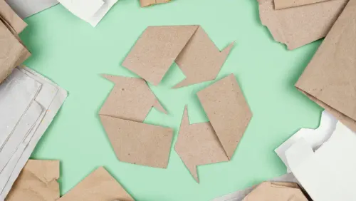

Nestlé S.A.

Nestlé S.A. es una empresa multinacional suiza líder en la industria de alimentos
y bebidas, con presencia en más de 180 países.
Misión
Mejorar la calidad de vida de las personas y contribuir a un futuro más saludable.
Visión
Ser líder en nutrición, salud y bienestar, creando valor sostenible.
ACTIVIDADES
Nestlé for Healthier Kids

Descripción: Programa global enfocado en mejorar la nutrición y promover hábitos de vida saludables en niños y adolescentes.
Objetivo: Ayudar a las nuevas generaciones a llevar una alimentación equilibrada y un estilo de vida activo mediante educación nutricional.
Impacto: Presente en decenas de países, beneficiando a millones de niños.
Compromiso de Cero Residuos (Zero Waste)

Descripción: Iniciativa ambiental que busca que todos los empaques de Nestlé sean reutilizables o reciclables.
Objetivo: Reducir el impacto ambiental y contribuir a una economía circular.
Impacto: Disminución de residuos y mayor uso de materiales reciclados.
Programa de Agricultura Sostenible

Descripción: Apoya a agricultores para adoptar prácticas sostenibles.
Objetivo: Promover la producción responsable y fortalecer comunidades agrícolas.